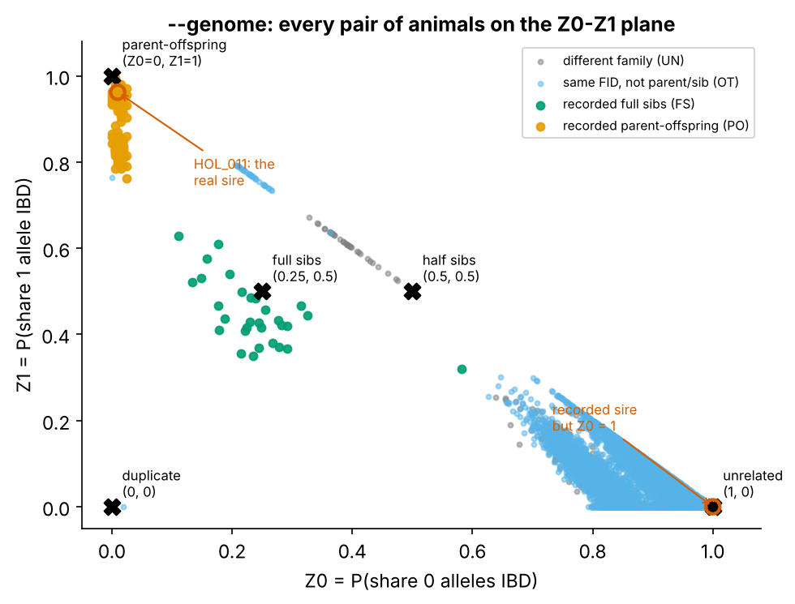
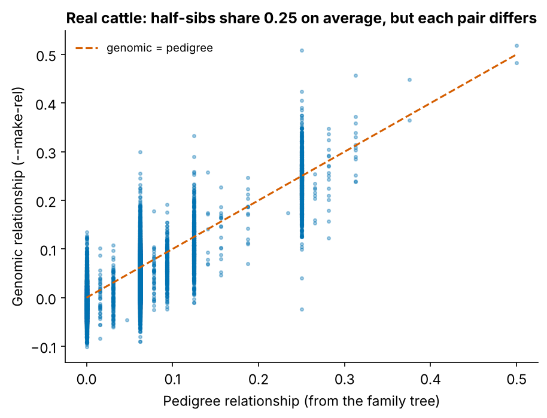
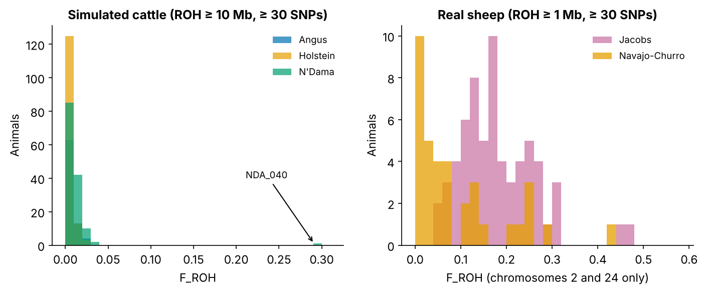

Pedigrees in livestock are useful but imperfect: a few percent of recorded sires are wrong in many herds. Genotypes let us measure relationships directly. This chapter explains what “related” means genetically, how PLINK measures it, and how to use it to catch duplicates, wrong parents and contaminated samples.
10.1 IBS and IBD: two kinds of sharing
At any SNP, two animals can share 0, 1 or 2 alleles. There are two reasons they might share one.
- Identical by state (IBS): the alleles are the same letter. That can happen by chance, especially for a common allele.
- Identical by descent (IBD): the alleles are the same physical copy, inherited from a recent common ancestor.
IBD implies IBS, but not the other way round. Two unrelated Holsteins share many alleles by state simply because the alleles are common in Holsteins. Relatedness is about IBD.
10.2 Kinship, relationship and inbreeding
Three coefficients describe IBD sharing. They differ by a factor of 2, which is a common source of confusion, so always say which one you report.
| Coefficient | Definition | Parent-offspring | Full sibs | Half sibs | Unrelated |
|---|---|---|---|---|---|
| Kinship φ | Probability that one allele taken at random from each animal is IBD | 0.25 | 0.25 | 0.125 | 0 |
| Relationship r = 2φ (PLINK’s PI_HAT, the GRM, the pedigree A matrix) | Proportion of the genome shared IBD | 0.5 | 0.5 | 0.25 | 0 |
| Inbreeding F of an animal | Kinship between its sire and dam |
Parent-offspring and full sibs have the same r = 0.5, but they share it differently. A calf always gets exactly one allele from each parent, so parent and calf share exactly one allele IBD at every position. Full sibs share 0, 1 or 2 alleles IBD with probabilities 1/4, 1/2 and 1/4. PLINK estimates these three probabilities for each pair:
| Relationship | Z0 = P(IBD = 0) | Z1 = P(IBD = 1) | Z2 = P(IBD = 2) | PI_HAT = Z1/2 + Z2 |
|---|---|---|---|---|
| Duplicate sample or identical twins | 0 | 0 | 1 | 1 |
| Parent-offspring | 0 | 1 | 0 | 0.5 |
| Full sibs | 0.25 | 0.5 | 0.25 | 0.5 |
| Half sibs, grandparent-grandchild, uncle-nephew | 0.5 | 0.5 | 0 | 0.25 |
| First cousins | 0.75 | 0.25 | 0 | 0.125 |
| Unrelated | 1 | 0 | 0 | 0 |
10.3 Step 1: estimate IBD with --genome
PLINK counts how many alleles each pair shares by state at every SNP, then uses the population allele frequencies to work out how much of that sharing is more than chance (a “method of moments”). Prune first, because SNPs in LD would count the same region many times.
plink --bfile cattle --cow --extract prune.prune.in --genome --out ibd FID1 IID1 FID2 IID2 RT EZ Z0 Z1 Z2 PI_HAT PHE DST PPC RATIO
HOL HOL_050 HOL HOL_050_rep OT 0 0.0188 0.0000 0.9812 0.9812 1 0.998168 1.0000 284.67
HOL_F03 HOL_F03_S HOL_F03 HOL_F03_C2 PO 0.5 1.0000 0.0000 0.0000 0.0000 1 0.761972 0.0560 1.74
HOL HOL_011 HOL_F03 HOL_F03_C2 UN NA 0.0096 0.9619 0.0285 0.5095 1 0.853903 1.0000 230.00| Column | Meaning |
|---|---|
| RT | Relationship recorded in the .fam: PO parent-offspring, FS full sibs, HS half sibs, OT other pair with the same FID, UN unrelated |
| EZ | PI_HAT expected from that recorded relationship |
| Z0, Z1, Z2, PI_HAT | Estimated IBD sharing (see the table above) |
| DST | IBS distance: share of alleles identical by state |
| PPC | Pairwise population concordance test; small values mean the two animals look like they come from different populations |
The most useful way to look at the whole file is to plot Z0 against Z1 for every pair. Each relationship type has its own place on that plane.

What the plot and the table reveal:
- HOL_050 and HOL_050_rep: PI_HAT 0.98 and Z2 0.98. The same animal was genotyped twice. Keep the copy with the better call rate.
- HOL_F03_S and HOL_F03_C2: the pedigree says parent-offspring (EZ = 0.5), but Z0 = 1 and PI_HAT = 0. This bull is not the calf’s sire.
- HOL_011 and HOL_F03_C2: Z1 = 0.96, exactly the pattern of a parent. HOL_011 is the real sire, which agrees with the Mendel errors in Chapter 8.
- ANG_030 had PI_HAT above 0.2 with 359 of the 360 other animals, including other breeds. Nobody is related to everyone. Contaminated DNA creates extra heterozygous calls, and these look like extra sharing with everyone. Together with its F of -0.72, this confirms contamination.
All other 119 recorded parent-offspring pairs fell between PI_HAT 0.4 and 0.9, as they should.
10.3.1 Controlling what --genome writes
For 361 animals the full .genome file has 361 × 360 / 2 = 64,980 lines (7.4 MB); for 5,000 animals it would have 12.5 million. Usually you only want the related pairs. All of the following were run on the LD-pruned SNPs (--extract prune.prune.in):
| Command | Pairs written | Use |
|---|---|---|
--genome |
64,980 | Every pair; needed for the Z0-Z1 plot and for mean relatedness |
--genome --min 0.2 |
851 | Only pairs with PI_HAT ≥ 0.2: candidates for relatives, duplicates and contamination |
--genome --max 0.05 |
48,825 | Only near-unrelated pairs, for example to pick a reference set |
--genome rel-check |
9,740 | Only pairs with the same FID |
--genome full --min 0.9 |
1 | Adds the IBS counts behind each estimate; here only the duplicate pair |
With full, the duplicate pair gains these columns:
... PI_HAT ... IBS0 IBS1 IBS2 HOMHOM HETHET
... 0.9812 ... 4 5 3540 3.0000 854.0000The two samples share both alleles (IBS2) at 3,540 of 3,549 SNPs, differ completely (IBS0) at only 4, which is about the genotyping error rate, and are heterozygous together at 854. These counts are what PLINK turns into Z0, Z1 and Z2, and looking at them helps when a PI_HAT seems odd.
rel-check compares pairs within an FID, which is meant for checking a pedigree. Its result depends on how you use the FID column. In our file, the 120 family animals have their own FIDs, but the unrelated animals all have FID ANG, HOL or NDA, so rel-check compared every Angus with every other Angus as well: of the 9,740 pairs, 120 were recorded parent-offspring (RT = PO), 30 full sibs (FS) and 9,590 “other” (OT). In livestock files where FID is the breed or herd, filter on the RT column, or use --min instead.
10.3.2 Population structure inflates IBD estimates
--genome uses allele frequencies from the whole file. When the file mixes breeds, animals of the same breed share more than the pooled frequencies predict, so they look a little related. In our data, 545 unrelated pairs (mostly N’Dama, the most distinct breed) had PI_HAT between 0.2 and 0.4. Run --genome within breed (with --keep), or use KING (below), when you need accurate relationships across breeds.
10.4 Step 2: the genomic relationship matrix (GRM)
A second way to measure relatedness treats each SNP as a small piece of evidence and averages over all SNPs. Write gil for the number of copies (0, 1 or 2) of allele 1 that animal i carries at SNP l, and fl for the frequency of that allele. The genomic relationship between animals i and j is
\[ \hat r_{ij} = \frac{1}{p}\sum_{l=1}^{p}\frac{(g_{il}-2f_l)(g_{jl}-2f_l)}{2f_l(1-f_l)} \]
In words: standardise each genotype by subtracting its expected value and dividing by its standard deviation, then average the products over all p SNPs. Two animals that carry the same unusual alleles get a positive value; unrelated animals average about zero (and can be slightly negative). This is the GRM of Yang and colleagues (2011), used by GCTA and in GBLUP genomic prediction; VanRaden’s (2008) G matrix is a close relative.
plink --bfile cattle_real_qc --cow --make-rel square --out grm
# grm.rel 500 x 500 matrix of relationships
# grm.rel.id the animal IDs, in the same orderThe real cattle data come with a pedigree of 1,929 animals, so we can compare the GRM with the relationships calculated from the family tree:

| Pedigree relationship | Pairs | Average GRM | SD of GRM |
|---|---|---|---|
| 0 (no known common ancestor) | 110,834 | -0.008 | 0.035 |
| 0.01 to 0.1 | 12,450 | 0.032 | 0.043 |
| 0.1 to 0.2 | 616 | 0.111 | 0.049 |
| 0.2 to 0.3 (mostly paternal half sibs) | 833 | 0.237 | 0.053 |
| 0.3 to 0.6 | 17 | 0.347 | 0.082 |
On average the genomic values match the pedigree very well: half sibs share 0.237 against the expected 0.25. But individual half-sib pairs (806 pairs with pedigree relationship 0.25) vary: 90% of them fall between 0.16 and 0.32. That spread is real: by chance, two sons of the same bull inherit more or less of the same half of his genome. The pedigree can only give the average; genotypes give the actual value. This is exactly why genomic selection is more accurate than pedigree-based selection.
10.5 Step 3: KING, a method robust to structure
KING (Manichaikul and colleagues, 2010) estimates kinship without using population allele frequencies. For a pair of animals i and j it counts three things at the SNPs where both are genotyped: the SNPs where both are heterozygous (NAa,Aa), the SNPs where they are opposite homozygotes, AA against aa (NAA,aa), and each animal’s own number of heterozygous SNPs (NAa(i) and NAa(j)). Opposite homozygotes are impossible for a parent and its calf, and rare for close relatives, so they count against relatedness; shared heterozygotes count for it.
The simplest form, for animals from one homogeneous population, is
\[ \hat\phi_{ij} = \frac{N_{Aa,Aa} - 2\,N_{AA,aa}}{N_{Aa}^{(i)} + N_{Aa}^{(j)}} \]
PLINK 2.0 uses the version Manichaikul and colleagues recommend when the two animals may come from different populations (their “between-family” estimator), which divides by the heterozygote count of the less heterozygous animal, written here as i:
\[ \hat\phi_{ij} = \frac{N_{Aa,Aa} - 2\,N_{AA,aa}}{2\,N_{Aa}^{(i)}} + \frac{1}{2} - \frac{N_{Aa}^{(i)} + N_{Aa}^{(j)}}{4\,N_{Aa}^{(i)}} \]
A check with real numbers, for the sire HOL_F01_S and his calf HOL_F01_C1 (autosomes, 4,495 SNPs typed in both): NAa,Aa = 608, NAA,aa = 2, and the two animals have 1,272 and 1,291 heterozygous SNPs. The second formula gives (608 − 4)/(2 × 1,272) + 0.5 − 2,563/(4 × 1,272) = 0.2337, exactly PLINK’s KINSHIP of 0.233687 (the first gives 0.236). The expected value for parent and offspring is 0.25. You can print these counts yourself with --make-king-table cols=id,nsnp,hethet,ibs0,ibs1,kinship.
Because it needs no allele frequencies, KING is much less fooled by breed mixing. It is available in PLINK 2.0:
plink2 --bfile cattle --cow --make-king-table --out king
plink2 --bfile cattle --cow --king-cutoff 0.177 --out unrelated # keep a set with no 1st-degree pairsKING reports kinship φ (not r), so its cut-offs are half of PI_HAT’s. The categories below are the ones proposed by Manichaikul and colleagues (2010):
| Category | Kinship φ | Relationship r |
|---|---|---|
| Duplicates or identical twins | > 0.354 | > 0.707 |
| First degree (parent-offspring, full sibs) | 0.177 to 0.354 | 0.354 to 0.707 |
| Second degree (half sibs, grandparents) | 0.088 to 0.177 | 0.177 to 0.354 |
| Third degree | 0.044 to 0.088 | 0.088 to 0.177 |
| Unrelated | < 0.044 | < 0.088 |
10.6 Step 4: runs of homozygosity (ROH)
An inbred animal inherited the same long stretch of chromosome from both parents, because both got it from a common ancestor. That stretch shows up as a long run of homozygous SNPs, a run of homozygosity (ROH). The share of the genome covered by ROH is F_ROH, a genomic inbreeding coefficient widely used in livestock:
\[ F_{ROH} = \frac{\text{total length of ROH in the animal}}{\text{length of the genome covered by SNPs}} \]
Long ROH come from recent inbreeding (the common ancestor was a few generations back); short ROH from old inbreeding. A common rule of thumb is that an ROH of length L cM traces back to a common ancestor about 50/L generations ago.
plink --bfile cattle --cow --autosome --homozyg --homozyg-density 1000 --homozyg-gap 3000 \
--homozyg-snp 30 --homozyg-kb 10000 --homozyg-window-snp 30 --out rohThe default settings were written for dense human data and require at least one SNP every 50 kb. Our practice panel has about one SNP per 700 kb, so the defaults found no runs at all. The settings must match your SNP density:
| Settings | ROH found | ROH length in the inbred NDA_040 |
|---|---|---|
defaults (--homozyg alone) |
0 | 0 |
| density 1000, gap 3000, 15 SNPs, 3 Mb | 16,889 | 1,259 Mb |
| density 1000, gap 3000, 30 SNPs, 10 Mb | 352 | 729 Mb |
| density 1000, gap 3000, 50 SNPs, 20 Mb | 13 | 665 Mb |
With only 15 SNPs required, chance homozygosity at sparse SNPs creates thousands of false runs. With 30 SNPs and 10 Mb, NDA_040 (truly homozygous on chromosomes 1 to 8) stands out with F_ROH = 729 / 2,507 = 0.29.

--homozyg option |
Meaning |
|---|---|
--homozyg-snp |
Minimum number of SNPs in a run |
--homozyg-kb |
Minimum length of a run (kb) |
--homozyg-density |
Maximum average distance between SNPs in a run (kb per SNP) |
--homozyg-gap |
Maximum gap between two SNPs inside a run (kb) |
--homozyg-window-snp |
Size of the scanning window (SNPs) |
--homozyg-window-het |
Heterozygous calls allowed per window (default 1) |
--homozyg-window-missing |
Missing calls allowed per window (default 5) |
--homozyg-window-threshold |
Share of windows that must be homozygous to call a SNP part of a run (default 0.05) |
Reading the output. The run above wrote three files and reported --homozyg: Scan complete, found 352 ROH.
roh.hom (one line per run):
FID IID PHE CHR SNP1 SNP2 POS1 POS2 KB NSNP DENSITY PHOM PHET
NDA NDA_040 1 1 snp00079 snp00142 86259092 145168385 58909.294 64 920.458 0.984 0.000
ANG ANG_001 1 6 snp00969 snp01003 75821224 106120511 30299.288 35 865.694 0.943 0.057
roh.hom.indiv (one line per animal):
FID IID PHE NSEG KB KBAVG
ANG ANG_001 1 2 41281.3 20640.7
NDA NDA_040 1 15 729434 48628.9
roh.hom.summary (one line per SNP):
CHR SNP BP AFF UNAFF
19 snp03011 48468396 3 17- In
.hom, KB is the run’s length, NSNP its number of SNPs, DENSITY the average kb per SNP, and PHOM/PHET the share of homozygous and heterozygous calls inside it. The ANG_001 run on chromosome 6 contains two heterozygous calls (PHET 0.057, that is 2 of 35 SNPs): the default--homozyg-window-het 1allows one per scanning window, to tolerate genotyping errors, so a long run can collect several. With--homozyg-window-het 0, the same settings found 53 runs instead of 352; NDA_040 still had 14 runs covering 719 Mb, because true inbreeding runs are clean. - In
.hom.indiv, NSEG is the number of runs, KB their total length and KBAVG the average. F_ROH is KB divided by the length covered by your SNPs (here 2,507 Mb). 204 of 361 animals had at least one run. - In
.hom.summary, AFF and UNAFF count how many cases and controls carry a run over each SNP. A SNP where many animals share a run (an “ROH island”) can point to a region under selection; with a case/control trait it is also a crude test of recessive effects.
Always report your exact settings, because F_ROH depends on them.
Use --make-king-table and --king-cutoff for relatedness, --make-rel for the GRM, and --homozyg (in recent builds). --genome does not exist in PLINK 2.0.